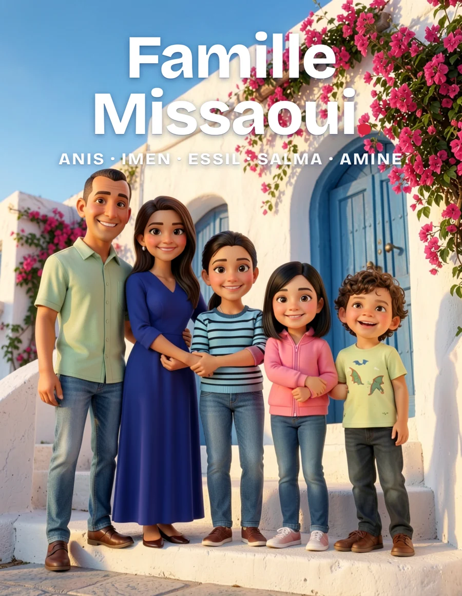
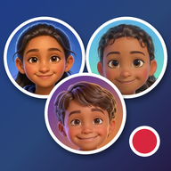

Mes cours et mes jeux pour apprendre
Les jeux de toute la famille
📌 Les nouveautés

Notre affiche 🖼️Mode explorateur : ouvre les cours et les jeux des enfants, fais les exercices. Rien ne compte dans leurs scores ni leur progression.
Apprendre en s'amusant
Famille Missaoui.
Les cours d'Essil, les jeux de Salma, les aventures d'Amine, et un grand jeu pour toute la famille. Choisis ton espace !
⏳ Le temps de jeu aujourd'hui
Choisis ton espace
Pour toute la famille
Les jeux de toute la famille
Les jeux 3D de toute la famille : chacun son avatar, ses pièces et sa collection. Le Ludo se joue contre la machine ou en ligne, dans Grimpe-Glace on grimpe une tour de glace, dans La Légende du Jasmin on traverse la Tunisie avec son avatar (le Jasmin 3 en images réalistes, le Jasmin 2 dessiné), et dans L'Atelier du Jasmin on colorie la Tunisie et on invente son serpent !
 رَبِّ زِدْنِي عِلْمًا
رَبِّ زِدْنِي عِلْمًاPour toute la famille
Se cultiver
Les belles histoires qui font grandir : l’éveil religieux raconté par papa et maman, en français et en arabe. Un film, un livre et des jeux pour chacun.
Bientôt : ma vie de petit musulman
